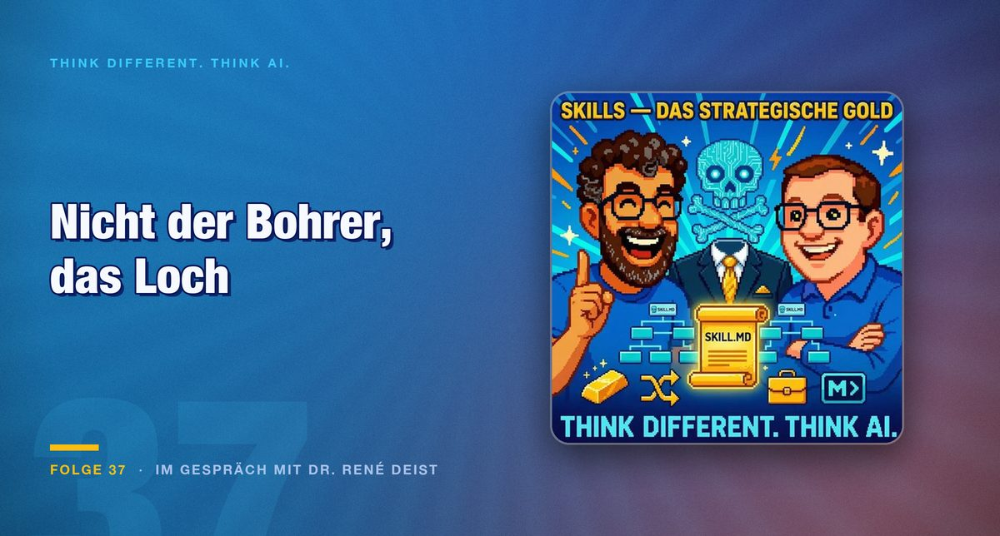

Episode 37 · In conversation with Dr René Deist
Skill engineering: why the system around the model decides
Raw model performance saturates, as the megapixel race with digital cameras once did. What counts after that is the construction around it. Dr René Deist on skills, the leadership paradox and the skill Chinese employees use to hold back their knowledge.

The thesis of the episode falls in the first few minutes and carries the rest: prompt engineering is yesterday, skill engineering is tomorrow. And that goes for agents as much as for whole organisations.
The guest is Dr René Deist, the podcast's very first guest, with whom the IOC model of intent, operate and control was discussed months ago.
What separates a skill from a prompt
Deist's definition is more precise than the common one. A skill is orchestrated access to tools, executable code in the middle of the markdown file, including Python snippets, and persistent storage units. And it is model-agnostic: the same skill runs with models from different vendors as you choose.
This last property is the economically most important one. A prompt is optimised for one model and loses its value on a switch. A skill describes the task and leaves the execution to whichever model is connected.
An analogy from the digital camera era serves as context. At some point the megapixel race was decided, because additional resolution no longer made a visible difference. After that the system decided: lens, image processing, handling. With language models the same point is in sight.
This becomes very concrete with a skill Deist describes: it combs through old GitHub repositories, transfers usable code into standalone skills and lets the rest carry on as Python. With reference to Andrej Karpathy the thought is spun further: instead of whole legacy code bases, in future you only fork the markdown file with the actual idea.
The leadership paradox
The second half carries an observation that contradicts intuition. The more business processes are automated, the more leadership is needed, not less.
The reason lies in the feedback loops. An estate of many agents continuously produces results that act on the next steps. Anyone not steering these loops strategically gets a system that runs efficiently in a direction nobody chose.
Delegation thereby becomes the core competence. The analogy in the episode comes from autonomous driving: removing the steering wheel entirely can be safer than hoping for human intervention in an emergency. A half-attentive human in a loop is frequently worse than a clear responsibility.
At organisational level it becomes fundamental. Deist quotes Jack Dorsey with the warning not simply to translate today's org charts into agentic structures. The pyramid is dead, exclusive knowledge is losing importance. That corresponds to what agile methods have intended for years and rarely achieve.
Note the connection between the two statements. Less hierarchy and more leadership are no contradiction if you understand leadership as setting direction rather than as a chain of command.
The view towards China
The most critical section concerns practice in China, and it contains the detail in the episode that is most uncomfortable for organisations.
Camera tracking in factories serves robotics training there. That is known. More interesting is a tool called anti-distillation skill: employees use it to filter their most valuable knowledge out of skill files before those go to management.
That is the predictable reaction to a demand many organisations are currently formulating. Anyone asking employees to bring their experiential knowledge into machine-readable form is asking them to increase their own replaceability. Without an answer to what they get in return, holding back is the rational choice.
In parallel, Chinese cities have installation services for OpenClaw as a kiosk offering, while here there is more hesitation and regulation.
Programming as a basic skill
By way of conclusion, both argue for understanding terminal and programming basics as a life skill. Not in the sense that everyone has to install or develop things themselves. In the sense that a basic understanding creates self-determination.
That is practically relevant for training programmes. Anyone offering application courses is teaching how to use a tool that will be different in two years. Anyone teaching what a token is, what a context window achieves and why a model asserts something is teaching something durable.
Conclusion
The episode delivers a usable test question for any AI investment: what of it survives the next model change.
Prompts do not survive it. Skills survive it, if they are written model-agnostically. The context architecture always survives it, because it describes which knowledge sits where.
For the organisation a second question comes along, and it is the more uncomfortable one: what do people get for writing down their experiential knowledge. Anyone with no answer to that gets skills in which the important part is missing. The anti-distillation skill is merely the technically mature version of this.